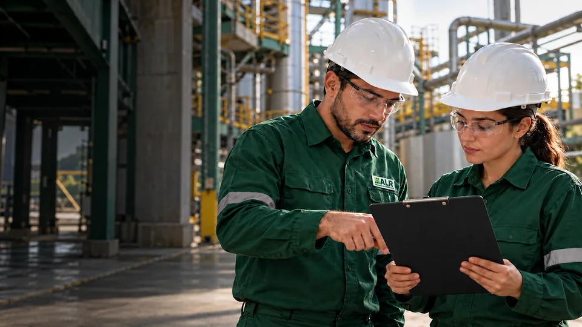

01 · Segurança do Trabalho
Programas, laudos e treinamentos.
Entenda os riscos da operação e organize as ações de prevenção.
- Programas e laudos
- Avaliações ambientais
- Treinamentos e assistência técnica